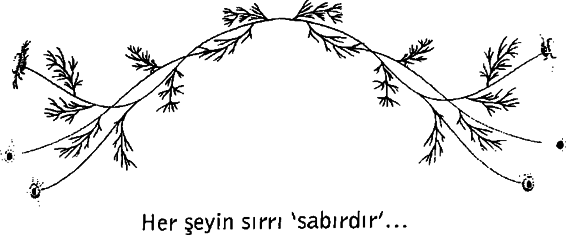

Bir zamanlar, her şeyden sürekli şikâyet eden, her gün hayatının ne kadar berbat olduğundan yakınan bir kız vardı. Hayat ona göre, çok kötüydü ve sürekli savaşmaktan, mücadele etmekten yorulmuştu. Bir problemi çözer çözmez, bir yenisi çıkıyordu karşısına.
Genç kızın bu yakınmaları karşısında, mesleği aşçılık olan babası ona bir hayat dersi vermeye niyetlendi. Bir gün onu mutfağa götürdü. Üç ayrı cezveyi suyla doldurdu ve ateşin üzerine koydu. Cezvelerdeki sular kaynamaya başlayınca, bir cezveye bir patates, diğerine bir yumurta, sonuncusuna da kahve çekirdeklerini koydu. Daha sonra kızına tek kelime etmeden, beklemeye başladı. Kızı da hiçbir şey anlamadığı bu faaliyeti seyrediyor ve sonunda karşılaşacağı şeyi görmeyi bekliyordu. Ama o kadar sabırsızdı ki, sızlanmaya ve daha ne kadar bekleyeceklerini sormaya başladı. Babası onun bu ısrarlı sorularına cevap vermedi.
Yirmi dakika sonra adam, cezvelerin altındaki ateşi kapattı. Birinci cezveden patatesi çıkardı ve bir tabağa koydu. İkincisinin yumurtayı çıkardı, onu da bir tabağa koydu. Daha sonra son Redeki kahveyi bir fincana boşalttı. Kızına dönerek sordu:
Ne görüyorsun?”
“Patates, yumurta ve kahve?” diye alaylı bir cevap verdi kızı.
“Daha yakından bak bir de!” dedi baba, “patatese dokun.”
Kız denileni yaptı ve patatesin yumuşamış olduğunu söyledi.
“Aynı şekilde, yumurtayı da incele.”
Kız, kabuğunu soyduğu yumurtanın katılaştığım gördü. En sonunda, kızının kahveden bir yudum almasını söyledi.
Söylenileni yapan kızın yüzüne, kahvenin nefis tadıyla bir gülümseme yayıldı. Ama yine de bütün bunlardan bir şey anlamamıştı:
“Bütün bunlar ne anlama geliyor baba ?”
Babası, patatesin de, yumurtanın da, kahve çekirdeklerinin de aynı sıkıntıyı yaşadıklarını, yani kaynar suyun içinde kaldıklarını anlattı. .
Ama her biri bu sıkıntı karşısında farklı tepkiler vermişlerdi. Patates daha önce sert, güçlü ve tavizsiz görünürken, kaynar suyun içine girince yumuşamış ve güçten düşmüştü. Yumurta ise çok kırılgandı; dışındaki ince kabuğun içindeki sıvıyı koruyordu. Ama kaynar suda kalınca, yumurtanın içi sertleşmiş katılaşmıştı.
Ancak, kahve çekirdekleri bambaşkaydı. Kaynar suyun içinde kalınca, kendileri değiştiği gibi suyu da değiştirmişlerdi ve ortaya tamamen yeni bir şey çıkmıştı.
“Sen hangisisin?” diye sordu kızına. “Bir sıkıntı kapını çaldığında nasıl tepki vereceksin? Patates gibi yumuşayıp, ezilecek misin? Yumurta gibi kalbini mi katılaştıracaksın? Yoksa kahve çekirdekleri gibi başına gelen her olayın duygularını olgunlaştırmasına ve hayatına ayrı bir tat katmasına izin mi vereceksin.

Acıya sabredersin adı 'metanet' olur... Açlığa sabredersin adı 'oruç' olur... İnsanlara sabredersin adı 'hoşgörü' olur..
Dileğe sabredersin adı 'dua' olur... Duygulara sabredersin adı 'gözyaşı' olur.. Özleme sabredersin adı 'hasret' olur... Sevgiye sabredersin adı 'aşk' olur...